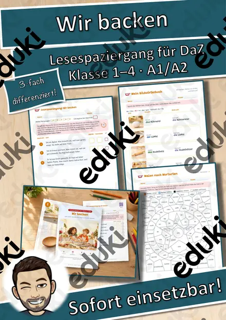
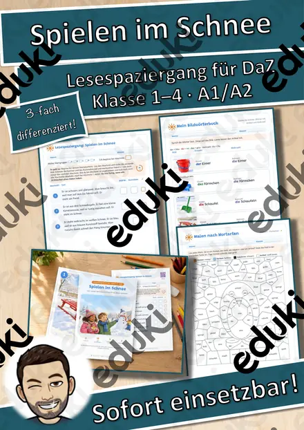
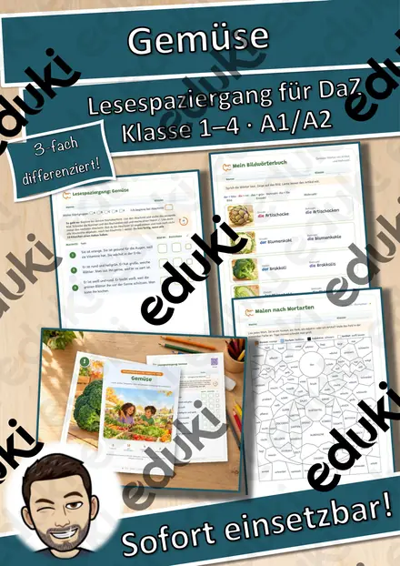
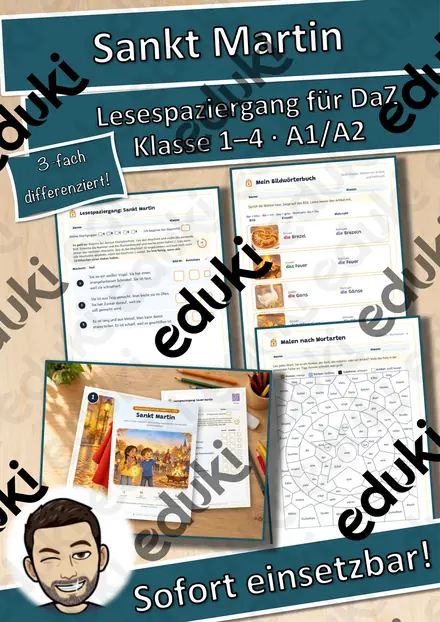
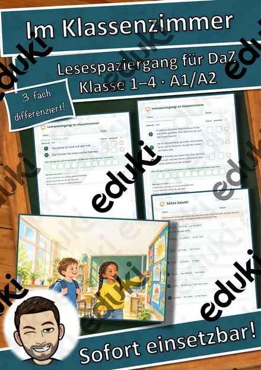
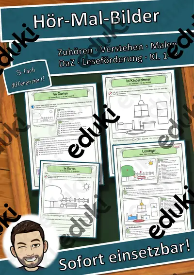

Lesespaziergang DaZ: Wir backen – Wortschatz mit Rätseln, 3-fach differenziert (Klasse 1–4)

Lesespaziergang DaZ: Spielen im Schnee – Wortschatz mit Rätseln, 3-fach differenziert (Klasse 1–4)

Lesespaziergang DaZ: Gemüse – Wortschatz mit Rätseln, 3-fach differenziert (Klasse 1–4)

Lesespaziergang DaZ: Sankt Martin – Wortschatz mit Rätseln, 3-fach differenziert (Klasse 1–4)

Lesespaziergang DaZ: Im Klassenzimmer – Wortschatz mit Rätseln, 3-fach differenziert (Klasse 1–4)

DaZ & Leseförderung Materialpaket: Partner-Werkstatt – Partnerdiktat, Hör-Mal-Bilder, Lese-Fitness-Pass (3 Niveaus, QR-Audio)
DaZ & Leseförderung: Lese-Fitness-Pass – Silben, Wörter, Sätze flüssig lesen (Lesetandem, QR-Audio)

DaZ & Leseförderung: Hör-Mal-Bilder – Zuhören, Lagewörter verstehen, malen (3 Niveaus, QR-Audio)

DaZ & Leseförderung: Partner-Diktat-Streifen – 6 Wortfelder, 3 Niveaus, Hör-Diktat per QR-Code
Keine Materialien gefunden – versuch einen anderen Suchbegriff oder Filter.